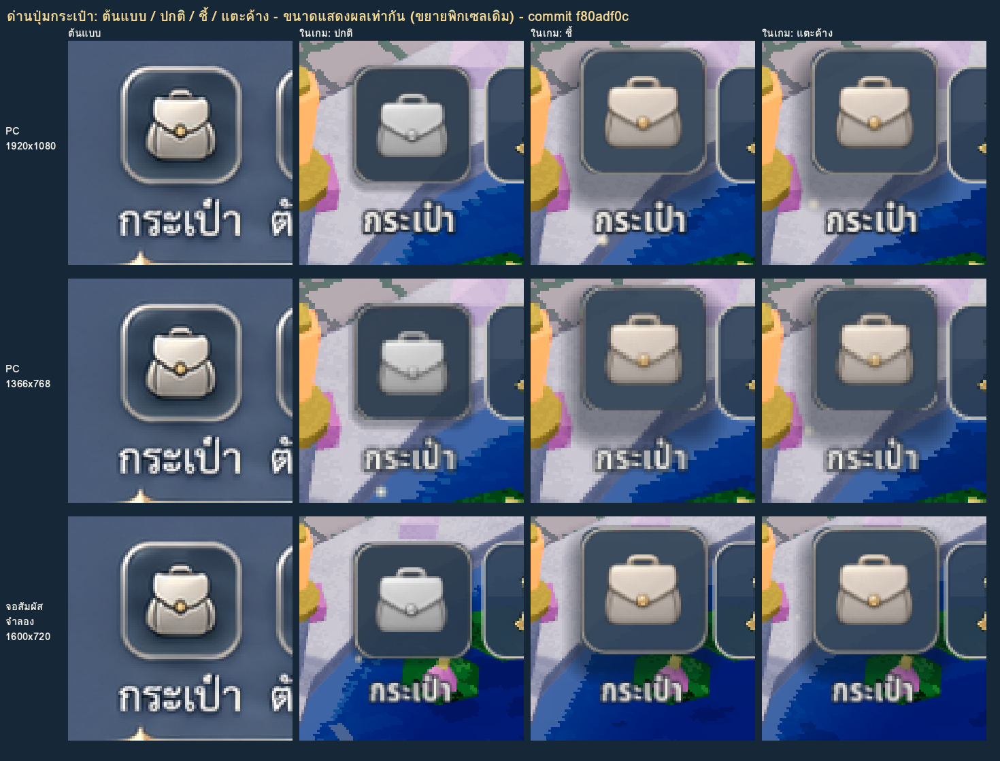
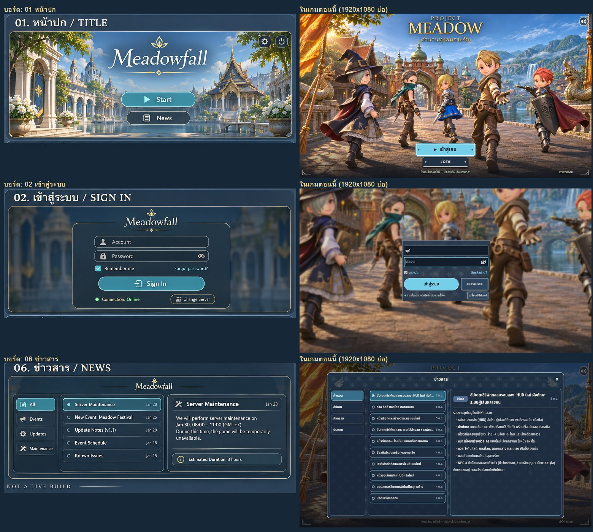
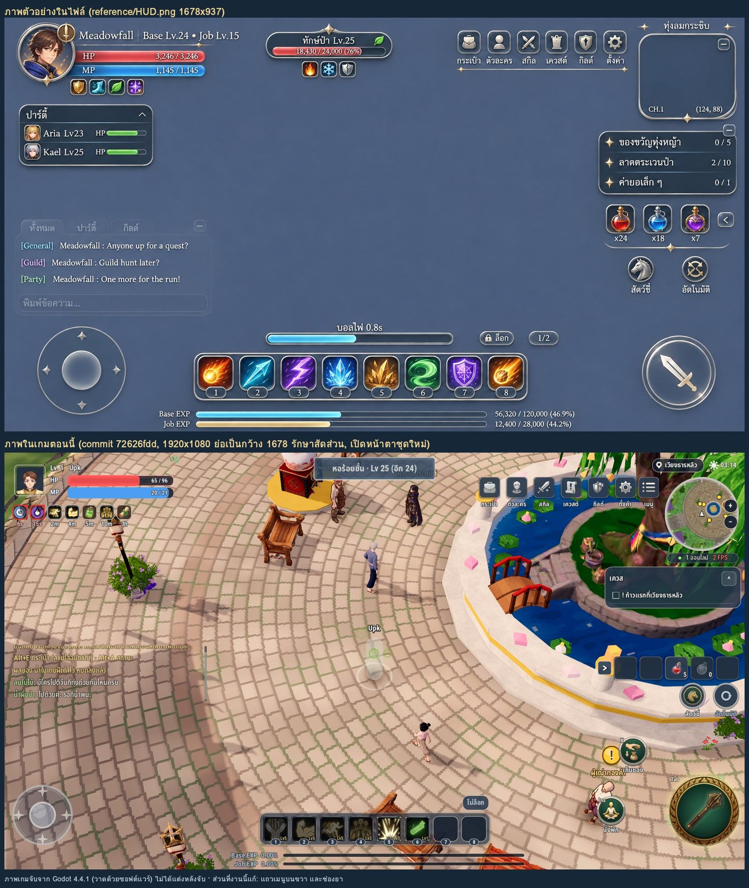
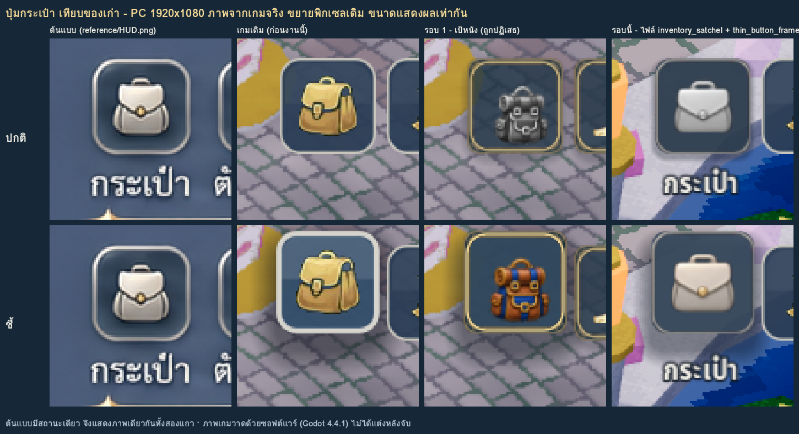
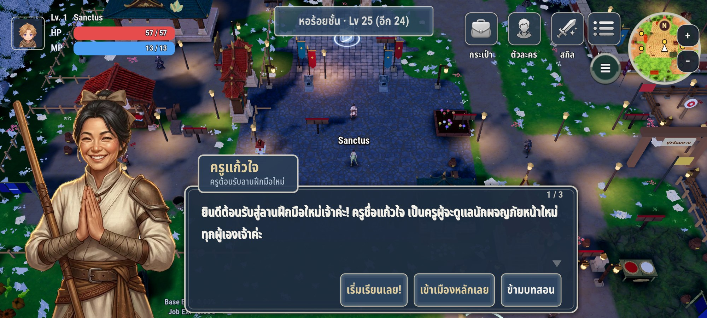
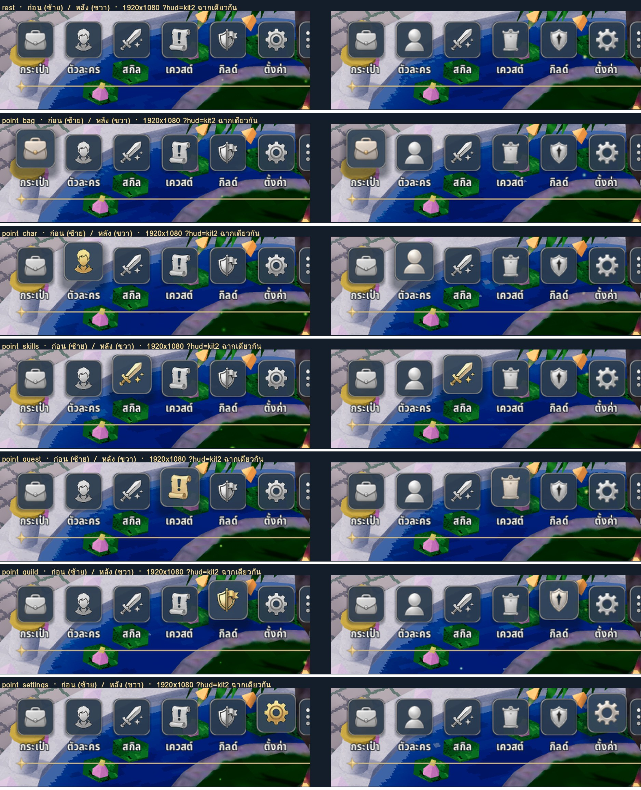
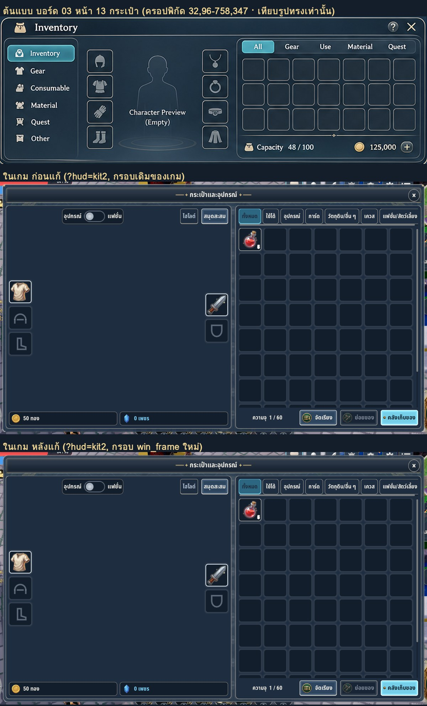
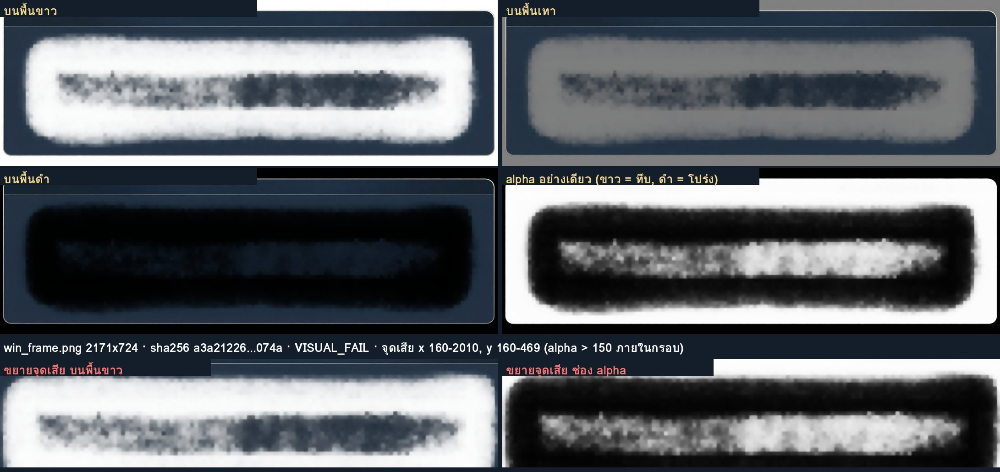
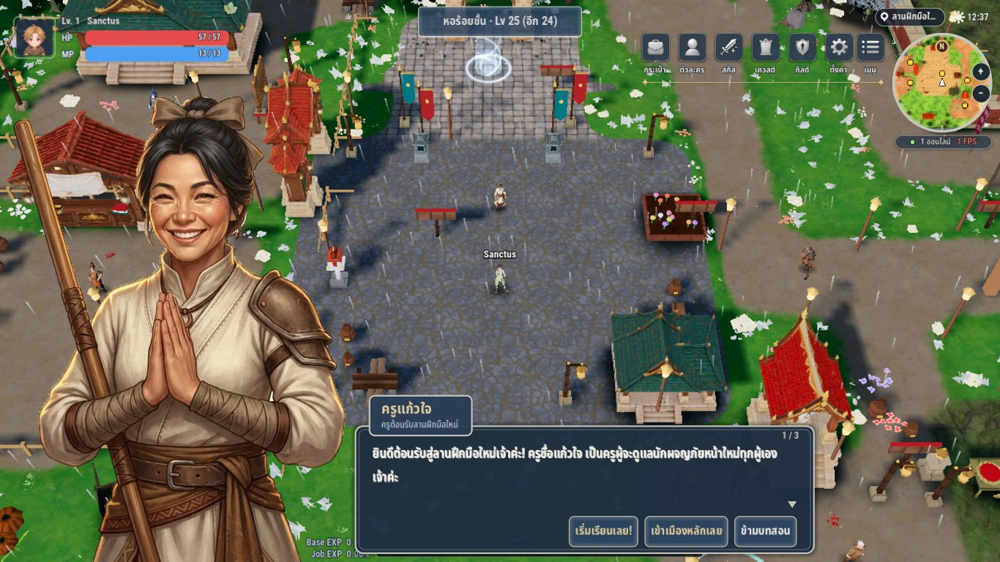
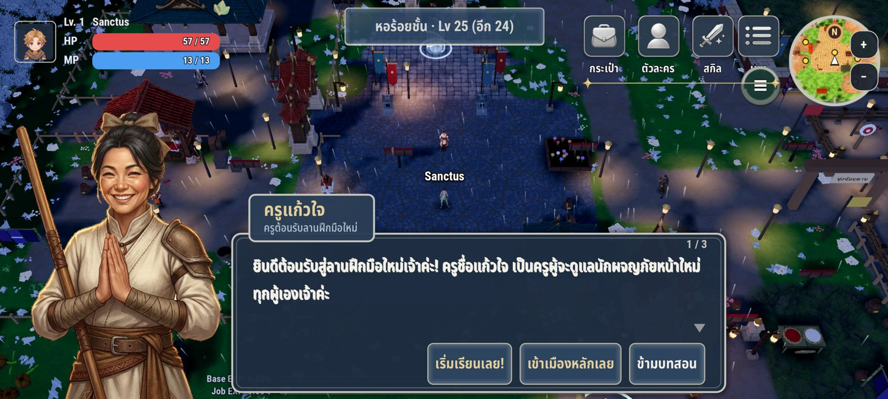

ปรับ HUD และปุ่มกระเป๋า — รอบแก้ภาพ
บิลด์ทดสอบบางส่วน · สถานะภาพ: CANDIDATE — ยังไม่ผ่านการตรวจของเจ้าของ · หน้าผู้เล่นยังใช้ภาพเดิม
build 2026-11-26 12:21 UTC · source f0a2b8f6 (รูป 0-10 = รอบก่อน 4bd82000) · เปิดเกมแบบชุดใหม่ · เปิดเกมแบบเดิม
ภาพทั้งหมดจับจากเกมที่รันจริง วาดด้วยซอฟต์แวร์ในคลาวด์ (ไม่ใช่การ์ดจอจริง / ไม่ใช่มือถือจริง) ไม่ได้แต่งหลังจับ
0a. ด่านปุ่มกระเป๋า: ต้นแบบ / ปกติ / ชี้ / แตะค้าง (3 ขนาดจอ)

0b. ชุดเข้าเกม: บอร์ด 01 / 02 / 06 เทียบในเกม (ปุ่ม "เข้าสู่เกม")

1. แถวเมนู: ภาพตัวอย่างในไฟล์ / ในเกมปกติ / ในเกมตอนชี้ (ขนาดปุ่มเท่ากัน)

2. HUD เต็มหน้า: ภาพตัวอย่าง / ในเกม (กว้างเท่ากัน)

3. ปุ่มกระเป๋า PC 1920x1080: ต้นแบบ / ปกติ / ชี้ + ภาพขยายพิกเซลเดิม

4. ปุ่มกระเป๋า จอสัมผัสจำลอง (EMULATED)

5. ปุ่มกระเป๋าเทียบของเก่า (ถ่ายก่อนขยายกรอบไปปุ่มอื่น)

6. ช่องยา: ภาพตัวอย่าง / ในเกม

7. คลิป: เมาส์เข้า-ออกปุ่มกระเป๋า แล้วไปปุ่มข้างเคียง (ขยาย 4 เท่า; ถ่ายก่อนขยายกรอบไปปุ่มอื่น)
8. บนเว็บจริง Chromium 1366x768

9. บนเว็บจริง Chromium 1366x768 ชี้ที่ปุ่ม

10. บนเว็บจริง จอมือถือจำลอง 800x360 @4x (EMULATED)

11. รอบนี้: แถวเมนูบน ก่อน / หลัง (ฉากเดียวกัน 1920x1080, ?hud=kit2) ปกติ และชี้ทีละปุ่ม — ตัวละคร เควสต์ กิลด์ ตั้งค่า ใช้ภาพที่ผ่าน; สกิลคงภาพเดิม

12. รอบนี้: หน้ากระเป๋า ต้นแบบบอร์ด 03 / ก่อน / หลัง (เปลี่ยนเฉพาะกรอบหน้าต่าง win_frame)

13. win_frame รุ่นแรก (VISUAL_FAIL) บนพื้นขาว เทา ดำ และ alpha — ไม่ได้ใช้

14. รอบนี้บนเว็บจริง Chromium 1366x768 (?hud=kit2)

15. รอบนี้บนเว็บจริง จอมือถือจำลอง 800x360 @4x (EMULATED, ไม่ใช่มือถือจริง)
